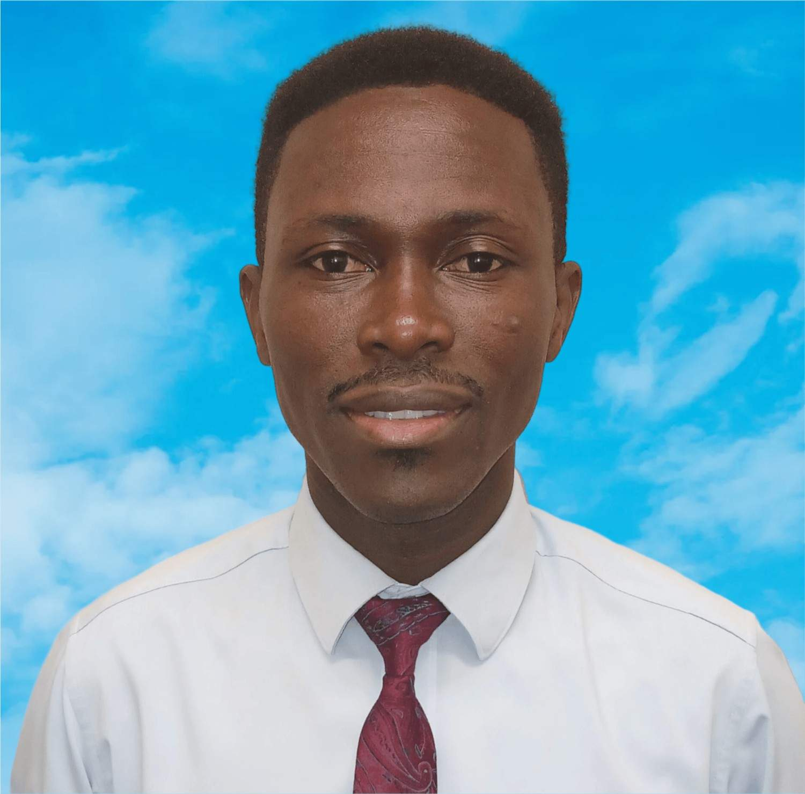

Dennis Anokye | WDD 130
Hello my name is Dennis Anokye, I was born to a loving parent in a remote village in the Ashanti Region of Ghana called Dompoase. I currently live and work in Accra. Some of my cherished hobbies include reading, singing, writing my own songs, listening to inspiring audios such as conference talks, podcast, music etc, with interests in diverse research topics such as nature, culture, arts, creativity, and environmental conservation. I continue to seek knowledge, inspire change, and embrace the values that shape life, standing firm in my faith and passions. I have passion in developing an app for farmers in remote areas to enable them to have access to information and resources. So I am currently studying Software Development in BYU-Idaho to hone my skills.
©2025 🌹 DENNIS ANOKYE 🌹 ACCRA, Ghana